开发者文档
创建导航抽屉
导航抽屉是一个从屏幕左边滑入的面板，用于显示应用的主要导航项目。
显示导航抽屉
用户可以通过在屏幕左边缘滑入或者触摸操作栏的应用图标打开导航抽屉。
导航抽屉覆盖在内容之上，但不覆盖操作栏。当导航抽屉完全打开后，操作栏的标题需要更换为应用的名称，而不是显示当前视图的名称，并且关闭所有和当前视图相关的操作按钮。操作栏的“更多操作”菜单按钮不需要关闭，以保证用户可以随时访问“设置”和“帮助”。
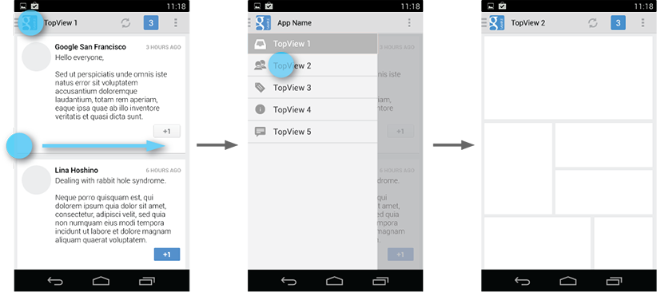因为导航抽屉是隐藏的，所以可以使你的应用界面更加清爽。你还可以通过导航抽屉，使用户从很深的操作页面直接回到应用的重要顶层视图。
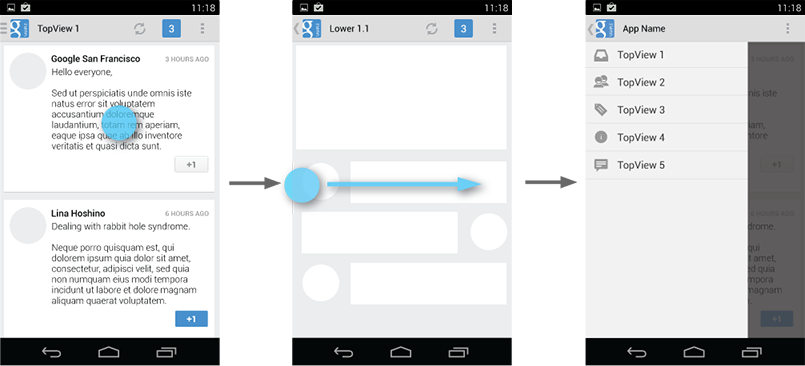关闭导航抽屉
当导航抽屉打开时，用户可以通过以下方式关闭它:
- 触摸导航抽屉以外的内容
- 从屏幕的任何位置向左滑动 (包括从屏幕的右边缘开始)
- 触摸应用操作栏的图标或者标题
- 按“返回”按钮
在什么情景使用导航抽屉
导航抽屉作为顶层导航控件，不仅仅是下拉菜单和标签的简单替换。你应当根据应用的实际需求选择何种导航控件。更多关于顶级视图切换的机制，参见应用结构设计模式。
这里有一些导航抽屉的例子：
超过3个顶级视图
导航抽屉比较适合同时显示多个导航目标。如果你的应用有超过 3 个顶层视图，应当选择导航抽屉；如果不超过 3 个，固定标签则是更合适的选择。
在深层视图之间导航
如果你的应用需要在深层次的视图之间导航，导航抽屉会是比较好的选择。因为在应用的任何位置都可以访问导航抽屉，所以如果需要从深层次的视图直接切换到其它视图中，导航抽屉比较便捷。
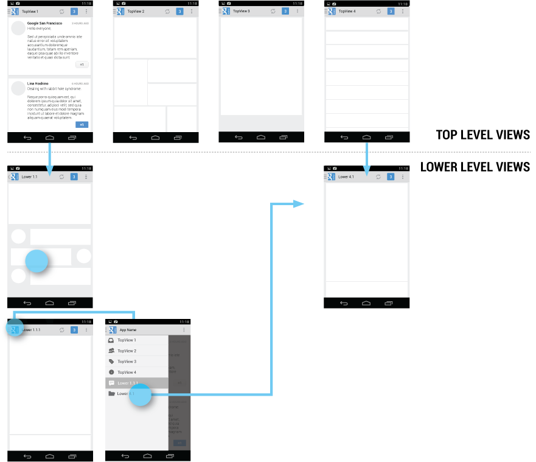深层次导航分支
如果你的应用有非常深层次的视图，用户使用“向上”或“返回”按钮导航到顶层视图就变得比较麻烦。此时如果提供导航抽屉这种更容易访问的方案，就会使得应用中的导航变的更加容易。
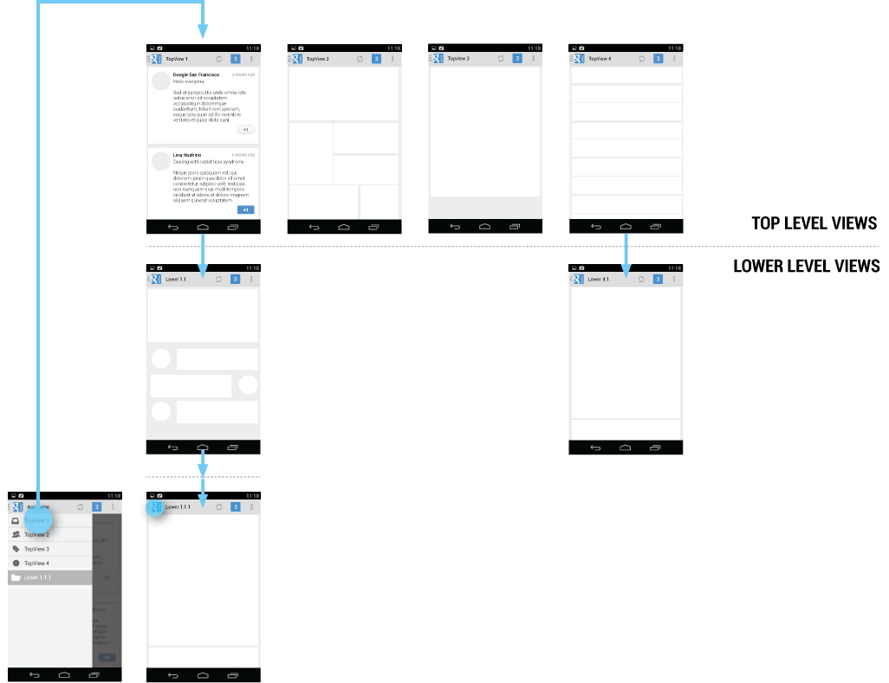导航中心
导航抽屉反应了你的应用的结构，显示他的主要导航信息。将导航中心理解成用户会想要经常访问的位置 - 前往应用的其他部分的跳板。导航中心至少会包括全部顶级视图，因为他们关系到应用的主要功能区。
如果你的应用有很深层次的视图，也可以将一些经常访问的深层次视图放入导航抽屉。
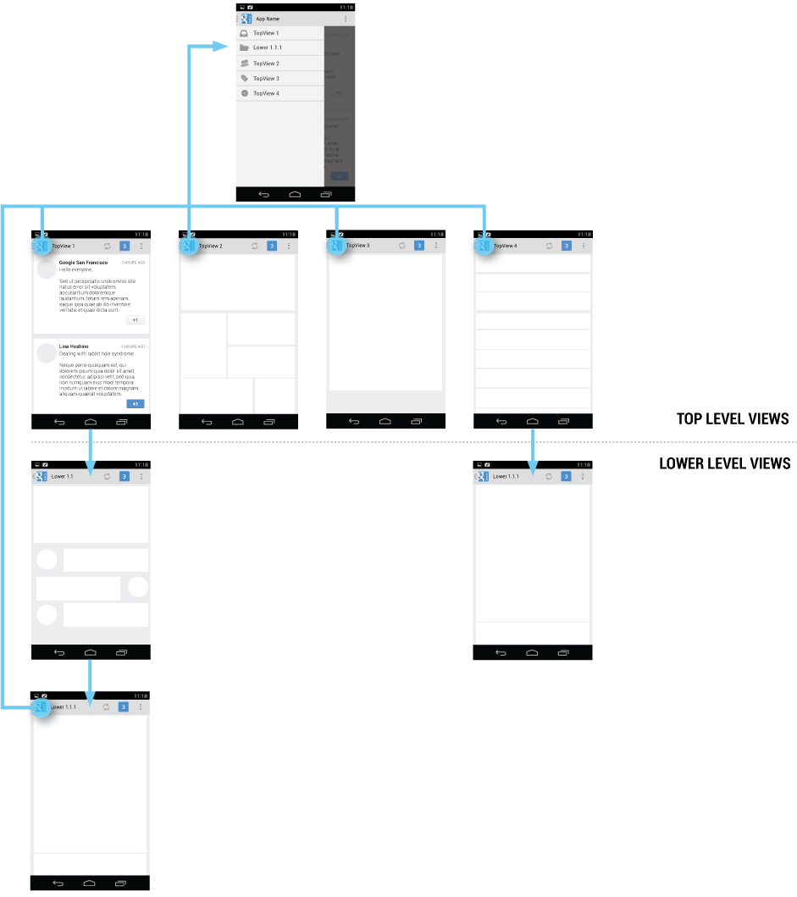为了提示导航抽屉的存在，所有导航抽屉中的视图都应该在操作栏的应用图标旁显示导航抽屉提示。当用户触摸应用图标时，导航抽屉从屏幕左边滑入。
其它视图的操作栏则显示标准的“向上”图标。导航抽屉仍然能够从屏幕边缘滑动打开，但是不能在操作栏上打开。
导航抽屉内容
确保导航抽屉用于应用的视图导航。在导航抽屉中，将应用的导航显示为列表项 - 一个项目一行。
标题栏、图标和数字提示
你可以在导航抽屉中放置标题栏，通过不同的标题组织导航项目。标题栏不需要对触摸操作有反馈，只是将导航对象分割成多个功能话题。如果你有很多导航对象，使用标题来指导用户使用导航抽屉。
导航对象可以有前置图标和后置的计数器。数字提示用于显示对应视图中变化的项目。
可折叠导航项
如果你有很多次级的功能视图，考虑使用可折叠的导航项目，以减少空间占用。导航抽屉的父节点成为一个分割项。它的左侧可以导航至父节点项的视图，它的右侧折叠或者打开子项的列表。
在启东市，可折叠项的初始状态由你决定。作为规则，导航抽屉的所有顶级视图项目应该可见。如果你有多个可折叠项，考虑将它们折叠来让用户可以一次看到所有的顶级视图。
当用户从一个低层屏幕打开导航抽屉，将相关的顶级视图相关的分支打开来增强位置感并强调用户当前位置的导航关系。
导航抽屉和操作栏
当导航抽屉打开时，用户的主要目的是选择不同的应用视图。注意导航抽屉并不覆盖操作栏，但用户可能不会注意到此时操作栏和导航抽屉的项目没有什么关系。
为了减少混栏，当导航抽屉打开时，请按以下指导调整操作栏内容:
- 应用图标
- 应用名称
- 在操作栏上移除与当前视图相关的操作按钮 (例如“新建”和“刷新”)。可以保持全局操作按钮，例如“搜索”。
- “更多操作”菜单中仍然显示导航目标，例如“设置”和“帮助”。
操作
不要将操作按钮放置在导航抽屉中。操作按钮应当始终放置在操作栏上。请记住不是所有应用都使用导航抽屉模式。将应用所有的功能放到一个区域是个好想法，但是请有大局观。将你的操作放在所有应用都显示它们的地方。
也将常用的导航目标放在操作栏里，像帮助和应用设置。作为惯例，帮助和设置总是位于操作栏的操作溢出区。
情景操作栏
有时用户会使用情景操作栏（CAB）而不是应用的操作栏。这种情况主要发生在用户选择文字或者长按选择多个项目。当情景操作栏可见时，你应该仍然让用户在滑动屏幕边缘时可以打开导航抽屉。但是在导航抽屉打开时，将情景操作栏替换成标准操作栏。当用户关闭导航抽屉后，重新显示情景操作栏。
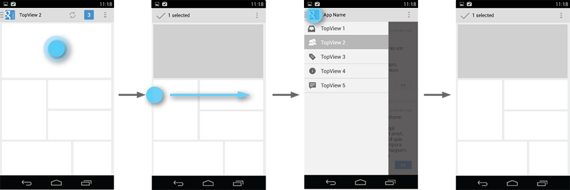如果用户选择了项目，却通过导航抽屉离开该视图，请在离开视图后自动取消之前的选择。
交互细节
首次启动时提示导航抽屉
当你的应用首次启动时，请打开导航抽屉，直到用户手动关闭它。这样确保用户了解如何使用导航抽屉，并且看到导航抽屉中有哪些项目。继续在接下来的启动中显示抽屉，知道用户主动的打开导航抽屉。一旦你知道用户明白如何打开导航抽屉，启动应用时抽屉可以默认关闭。
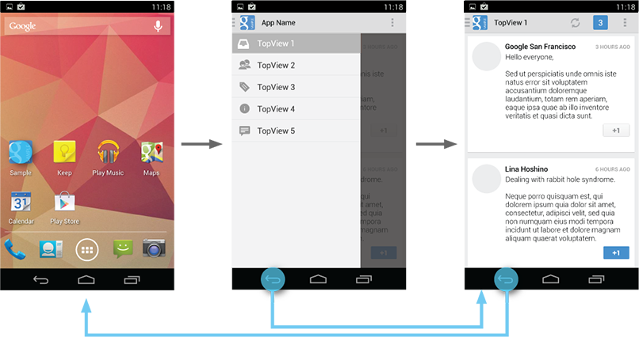给用户小提示
当用户触摸屏幕左边缘的时候 (左边缘 20dp 之内的位置)，稍稍显示一点导航抽屉。提供有效的反馈，并且提示用户。
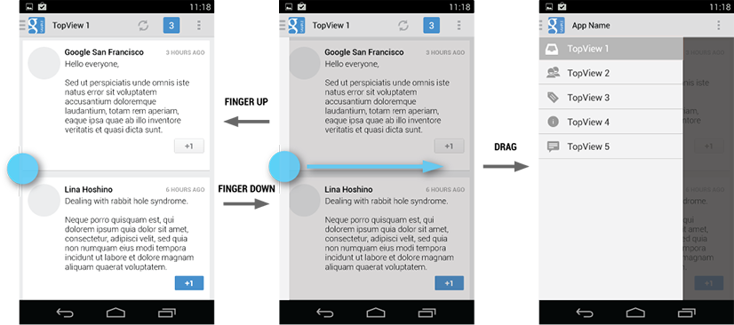高亮当前项
如果当前视图是导航抽屉中的一项，打开导航抽屉时高亮该项目。如果不是则不要高亮任何项目。
导航抽屉对全局导航的影响
导航抽屉是安卓的一种顶层导航模式。要让带导航抽屉的应用和使用标签卡或者下来菜单模式的应用行为保持一致，记住所有的导航模式都需要实现系统的向后和向上导航。
要特别注意一下这些情况：
在顶层视图使用“返回”按钮
在顶层视图触摸“返回”按钮时，不要打开导航抽屉。要根据设计要求返回当前任务的上一个应用或者返回“主屏幕”。
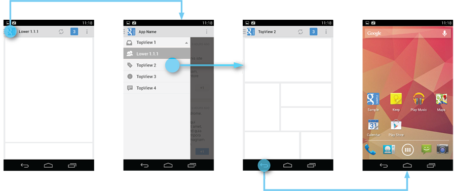跨越多级视图的导航后使用“返回”按钮
如果用户通过导航抽屉直接进入深层次的视图，并且该视图有父视图，那么“返回”按钮栈应当被清空，且触摸“返回”按钮后返回其父视图。该导航行为类似于直接从通知进入应用的深层次视图。
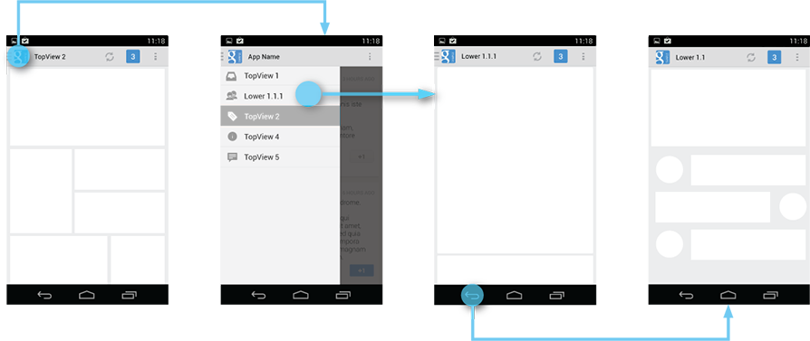样式
导航抽屉的宽度可以根据应用的内容做出调整，但是请保持在 240dp 到 320dp 之间。每个项目的高度也不应低于 48dp。参考下面关于填充和空间推荐值的布局指南。
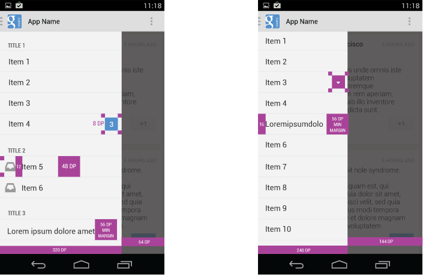选择适合应用的导航抽屉背景色。参考下面Holo light 及 Holo dark 主题的抽屉的例子。
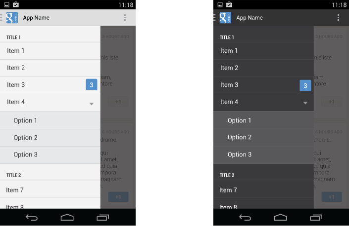导航抽屉要点：
无论您使用标准的导航抽屉还是自己实现的类似导航栏，请注意保持以下的设计模式:
- 始终显示操作栏，并根据需要调整内容。
- 导航抽屉覆盖在内容之上。
- 导航抽屉中的所有视图都在操作栏提供带有导航抽屉提示的应用图标，并可以通过触摸图标打开导航抽屉。
- 使用新设计的滑入滑出动画。
- 不包含在导航抽屉中的视图都在操作栏提供标准的“向上”按钮。
- 保持标准的“向上”和“返回”按钮行为。